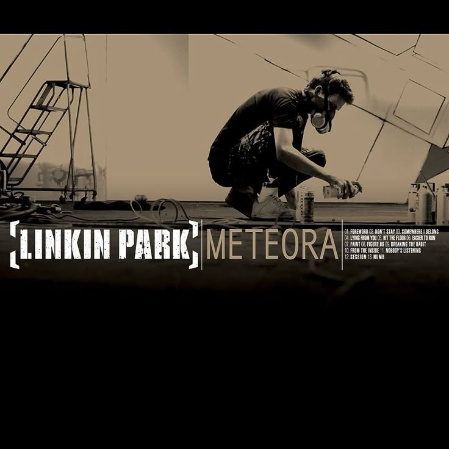
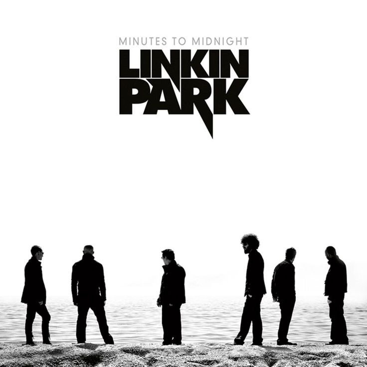

T'es au bon endroit
Bienvenue sur la fan page de Chester Bennington! c'est un endroit sympa pour ceux qui sont passionnés par l'art et musique du groupe Linkin Park mais plus particulièrement par le talentueux chanteur Chester Bennington. Vous trouverez ici des informations sur sa vie, sa carrière et son héritage musical. Esperons que vous apprécierez votre visite et que vous trouverez l'inspiration dans la musique de Chester Bennington.
C'etait vraiment quelqu'un...
Chester Charles Bennington (20 mars 1976 - 20 juillet 2017) était un chanteur, auteur-compositeur et acteur américain, surtout connu comme le chanteur principal du groupe de rock Linkin Park. Il a également été membre de plusieurs autres groupes, dont Dead by Sunrise et Stone Temple Pilots.
Ils m'ont bercé
Voici quelques albums de Chester Bennington avec Linkin Park: Ces sont pour moi les meilleurs albums du groupe mais ce n'est que mon avis personnel :p .





Carrière
Voici un aperçu de la carrière de Chester Bennington:
- 1993: Chester Bennington rejoint le groupe Grey Daze.
- 1999: Il devient le chanteur principal de Linkin Park.
- 2000: Sortie de l'album "Hybrid Theory" de Linkin Park, qui connaît un succès mondial.
- 2003: Sortie de l'album "Meteora" de Linkin Park.
- 2005: Chester Bennington forme le groupe Dead by Sunrise.
- 2007: Sortie de l'album "Minutes to Midnight" de Linkin Park.
- 2010: Sortie de l'album "A Thousand Suns" de Linkin Park.
- 2012: Sortie de l'album "Living Things" de Linkin Park.
- 2014: Sortie de l'album "The Hunting Party" de Linkin Park.
- 2017: Sortie de l'album "One More Light" de Linkin Park.
Hommage
Chester Bennington a laissé un héritage musical durable et continue d'inspirer de nombreux fans à travers le monde. Je vous invite à écouter sa musique et à découvrir son talent unique. Son influence sur la musique rock et alternative est indéniable, et il restera à jamais dans nos cœurs.* Je suis profondément attristé par sa perte, mais je suis également reconnaissant pour la musique qu'il nous a laissée. Jespere que vous trouverez du réconfort et de l'inspiration dans sa musique, et que vous continuerez à célébrer sa vie et son héritage.